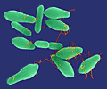

Крайняя токсичность ботулотоксина делает его потенциально летальным пищевым токсином и возможным агентом биотеррористических атак. Согласно данным, полученным грузинскими учёными, по совокупности симптомов инфекции у пораженных лиц можно предсказать скорость наступления летального исхода, что позволит врачам в условиях возможного массового заражения сосредоточить внимание на более тяжёлых пациентах.

Ботулизм - пищевая токсикоинфекция, вызываемая Clostridium botulinum. Микроорганизм продуцирует нейротоксин, оказывающий сильное воздействие на организм человека. Крайняя токсичность ботулотоксина делает его потенциально летальным пищевым токсином и возможным агентом биотеррористических атак. Симптомы инфекции включают: диплопию (двоение в глазах), сухость во рту, нарушение глотания, расширение зрачков, дисфонию, в последующем развиваются нисходящие парезы или параличи.
Пациенты, страдающие ботулизмом, нуждаются в немедленном оказании медицинской помощи в условиях отделения интенсивной терапии. Очень важной является ранняя диагностика инфекции, а также раннее проведение лечебных, профилактических и санитарно-эпидемических мероприятий. При массовом характере заражения крайне важно выявить больных в первую очередь нуждающихся в экстренной медицинской помощи.
Исследователи Центров по контролю над инфекционными заболеваниями (CDC, США) и Национального центра по контролю заболеваемости (Грузия) изучили 706 клинических случаев ботулизма, наблюдавшихся на территории Грузии. Они обнаружили, что наиболее высокий риск развития летального исхода наблюдался у пациентов со следующими симптомами: укорочение дыхания и ослабление рвотного рефлекса, но без диареи.
По мнению исследователей, данное сочетание симптомов обладает высокой прогностической ценностью, позволяя врачам в условиях возможного массового заражения в первую очередь сосредоточить внимание на пациентах с более высоким риском развития летального исхода.
Hennessy T.W., Rotz L.D.
Foodborne botulism in the Republic of Georgia: implications for preparedness planning.
Clin Infect Dis 2004; 39:363-5